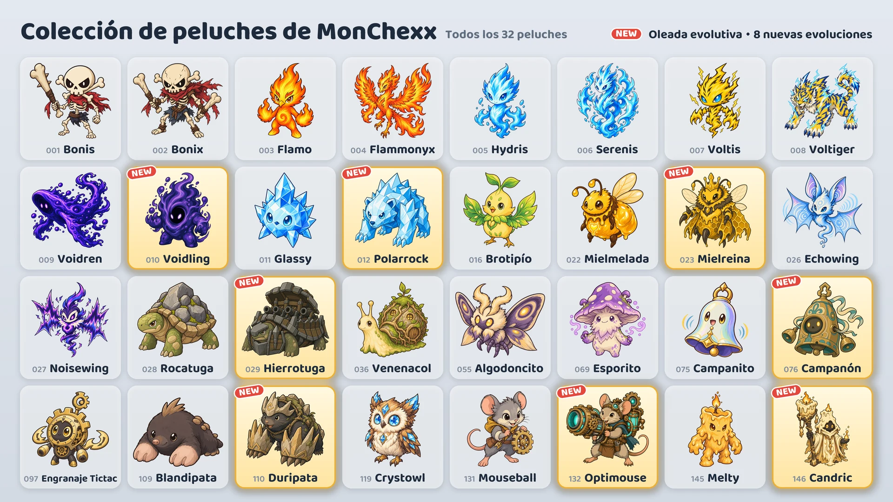

Temporada 1 · Actualización 02: Oleada evolutiva
El 16 de octubre se añaden ocho nuevas evoluciones.

Ocho nuevas evoluciones
- Voidling: evoluciona de Voidren · Tanque
- Polarrock: evoluciona de Glassy · Tanque / Luchador
- Mielreina: evoluciona de Mielmelada · Apoyo / A distancia
- Hierrotuga: evoluciona de Rocatuga · Tanque
- Campanón: evoluciona de Campanito · Tanque / Apoyo
- Duripata: evoluciona de Blandipata · Tanque / Asesino
- Optimouse: evoluciona de Mouseball · A distancia
- Candric: evoluciona de Melty · Apoyo / A distancia
Cómo conseguirlas
- Máquina de garra (evento): Durante el evento (del 16 al 24 de octubre), todas las máquinas, salvo las dos de los extremos de la fila, contienen una de las nuevas evoluciones junto con otros dos peluches. Cuando termine el evento, las nuevas evoluciones aparecerán en la misma proporción que los demás peluches.
- Intercambio de peluches: Puedes cambiar 10 peluches de sobra por el peluche que elijas (Cambio a elegir) o 3 por un peluche al azar (Cambio al azar).
- Paquetes de peluches: Las nuevas evoluciones también pueden salir en los paquetes de peluches.
Uso de los peluches evolucionados
- Un peluche evolucionado se colecciona por separado, y puedes ponerlo en tu equipo en cuanto lo tengas.
- En «Arma tu equipo», selecciona un peluche y toca Base o Evolución para cambiar la forma.
- Un equipo solo puede tener un peluche de cada línea evolutiva.
- Un peluche evolucionado sube de nivel por separado del peluche base.
Peluches nuevos
Los valores «del Ataque», «del Poder mágico» o «de la Vida máxima» aumentan a medida que el peluche sube de nivel.
Voidling · Tanque · Alcance 1
- Absorción del vacío: La Vida máxima aumenta en una cantidad equivalente al 560% del Poder mágico + el 6% de la Vida máxima al comenzar el combate, y Voidling recupera esa misma cantidad de Vida. Después inflige a todos los enemigos en un radio de 1 casilla daño mágico equivalente al 10% de la Vida actual de Voidling. El aumento de Vida máxima dura hasta que termina el combate.
- Festín del vacío: Obtiene 10 de Maná cada vez que un enemigo a una distancia máxima de 4 casillas usa una habilidad activa.
Polarrock · Tanque/Luchador · Alcance 1
- Golpe de escarcha: Inflige daño físico equivalente al 820% del Ataque al objetivo actual y al 385% a los enemigos en un radio de 1 casilla alrededor de él, y aplica Escarcha (−15% de Velocidad de ataque durante 8 segundos). Cuando la Escarcha se acumula 3 veces en el objetivo actual, este queda Congelado durante 1,5 segundos y no puede actuar ni obtener Maná.
- Piel de cuarzo: Reduce en un 20% el daño mágico recibido. También se aplica al daño mágico continuo.
Mielreina · Apoyo/A distancia · Alcance 3
- Jalea real: Cura a todas las abejas obreras una cantidad equivalente al 100% de su Vida máxima y les otorga +200% de Velocidad de ataque durante 3 segundos. Si tiene menos de 3 abejas obreras, invoca 1 más.
- Enjambre obrero: Tiene hasta 3 abejas obreras. Las estadísticas de las abejas siguen el nivel de Mielreina, y cada abeja recibe cada segundo daño equivalente al 4% de su Vida máxima. Si Mielreina cae, las abejas se enfurecen e infligen y reciben el doble de daño.
Hierrotuga · Tanque · Alcance 1
- Cañoneo giratorio: Gira sobre sí mismo en sentido antihorario y dispara el cañón 6 veces. Cada disparo inflige daño físico equivalente al 1540% del Ataque al primer enemigo a una distancia máxima de 2 casillas en esa dirección. Mientras dispara no se mueve ni obtiene Maná, y se detiene si queda Aturdido o Congelado.
- Caparazón fortificado: Obtiene 35 de Armadura y 35 de Resistencia mágica por cada enemigo en un radio de 1 casilla.
Campanón · Tanque/Apoyo · Alcance 1
- Campanada: Inflige daño mágico equivalente al 555% del Poder mágico a todos los enemigos a una distancia máxima de 2 casillas y les aplica Provocación durante 2 segundos. Mientras tanto, el 35% del daño de cada ataque básico enemigo que recibe (antes de las reducciones) se devuelve como daño mágico a todos los enemigos a una distancia máxima de 2 casillas.
- Resonancia: Recupera Vida equivalente al 120% del Poder mágico cada vez que otro aliado a una distancia máxima de 2 casillas usa una habilidad activa.
Duripata · Tanque/Asesino · Alcance 1
- Asalto subterráneo: Elimina todas las debilitaciones que tiene, se entierra y avanza hasta la casilla vacía con más enemigos alrededor, y luego inflige daño físico equivalente al 740% del Ataque a todos los enemigos en un radio de 1 casilla. No puede ser atacado mientras se desplaza.
- Zarpas de piedra: Aumenta la Armadura en una cantidad equivalente al 50% del Ataque.
- Comienza el combate con 0 de Maná.
Optimouse · A distancia · Alcance 4
- Cañón láser: Carga durante 1,5 segundos y luego dispara hacia el objetivo actual un láser de 1 casilla de ancho que llega hasta el borde de la cancha e inflige daño mágico equivalente al 1210% del Ataque a todos los enemigos alcanzados. El disparo se cancela si queda Aturdido o Congelado durante la carga.
- Circuito precalentado: Cada ataque básico aumenta la Velocidad de ataque en un 15%, hasta un máximo del 100%. Usar la habilidad activa reinicia el aumento.
Candric · Apoyo/A distancia · Alcance 3
- Llama eterna: Otorga durante 5 segundos una marca y un escudo equivalente al 375% del Poder mágico al aliado con menos Vida (sin contarse a sí mismo). Si un daño directo fuera a derrotar al aliado marcado, Candric recibe en su lugar el 200% de ese daño.
- Cera derretida: El daño directo que recibe Candric se resta de la Vida poco a poco a lo largo de 4 segundos.
Combates clasificatorios e insignias
- Los rivales de los combates clasificatorios también usan las nuevas evoluciones.
- Las ocho nuevas evoluciones no cuentan para la insignia «Colección de la temporada 1».
- La insignia «Experto en evoluciones» se consigue al tener 5 peluches evolucionados distintos. Ahora hay 13 peluches evolucionados.
Puedes consultar los cambios de equilibrio de todos los peluches en las notas del parche «Equilibrio y sistema de combate».